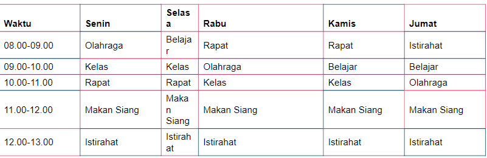

Matriks adalah kumpulan angka yang diatur dalam baris dan kolom.
Contoh:
Baris: Setiap baris mewakili himpunan angka yang terorganisir secara horizontal.
Kolom: Setiap kolom mewakili himpunan angka yang terorganisir secara vertikal.
Pemrograman Komputer: Dalam pemrograman komputer, matriks sering digunakan untuk mewakili transformasi grafis, seperti rotasi, translasi, dan penskalaan objek di layar.
Fisika: Dalam fisika, matriks digunakan untuk menggambarkan sistem persamaan linear yang muncul dalam berbagai fenomena, seperti sistem mekanika, medan listrik dan magnet, serta dinamika fluida.
Ekonomi: Dalam ekonomi, matriks digunakan untuk menganalisis hubungan antara berbagai variabel ekonomi, seperti penawaran dan permintaan barang, investasi, dan interaksi antar pasar.
Matriks dapat digunakan untuk merepresentasikan data dalam berbagai konteks kehidupan sehari-hari. Salah satu contohnya adalah jadwal harian, di mana waktu (baris) bertemu dengan kegiatan atau tugas yang harus dilakukan (kolom). Misalnya:
